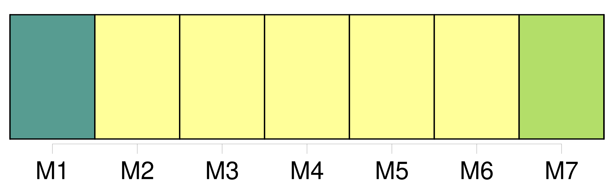

Longueur nb maillons : 10 mentions |
 |
[Article 22] [11 phrases]
Les dispositions des paragraphes 1 et 2 [du présent article] ne s'appliquent pas s'il est prouvé que le dommage résulte d'un acte ou d'une omission du transporteur, de ses préposés ou de ses mandataires, fait soit avec l'intention de provoquer un dommage, soit témérairement et avec conscience qu'un dommage en résultera probablement, pour autant que, dans le cas d'un acte ou d'une omission de préposés ou de mandataires, la preuve soit également apportée que ceux -ci ont agi dans l'exercice de leurs fonctions. [1 phrases] Les limites fixées par l'article 21 et par [le présent article] n'ont pas pour effet d'enlever au tribunal la faculté d'allouer en outre, conformément à sa loi, une somme correspondant à tout ou partie des dépens et autres frais de procès exposés par le demandeur, intérêts compris. [7 phrases] Toutefois, les États qui ne sont pas membres du Fonds monétaire international et dont la législation ne permet pas d'appliquer les dispositions du paragraphe 1 du présent article, peuvent, au moment de la ratification ou de l'adhésion, ou à tout moment par la suite, déclarer que la limite de responsabilité du transporteur prescrite à l'article 21 est fixée, dans les procédures judiciaires sur leur territoire, à la somme de 1500000 unités monétaires par passager ; 62500 unités monétaires par passager pour ce qui concerne le paragraphe 1 de [l'article 22] ; 15000 unités monétaires par passager pour ce qui concerne le paragraphe 2 de [l'article 22] ; et 250 unités monétaires par kilogramme pour ce qui concerne le paragraphe 3 de [l'article 22] [4 phrases] Le calcul mentionné dans la dernière phrase du paragraphe 1 du présent article et la conversion mentionnée au paragraphe 2 du présent article sont effectués de façon à exprimer en monnaie nationale de l'État partie la même valeur réelle, dans la mesure du possible, pour les montants prévus aux articles 21 et [22] , que celle qui découlerait de l'application des trois premières phrases du paragraphe 1 du présent article. [2 phrases] Sans préjudice des dispositions de l'article 25 de la présente convention et sous réserve du paragraphe 2 ci-dessous, les limites de responsabilité prescrites aux articles 21, [22] et 23 sont révisées par le dépositaire tous les cinq ans, la première révision intervenant à la fin de la cinquième année suivant la date d'entrée en vigueur de la présente convention, ou si la convention n'entre pas en vigueur dans les cinq ans qui suivent la date à laquelle elle est pour la première fois ouverte à la signature, dans l'année de son entrée en vigueur, moyennant l'application d'un coefficient pour inflation correspondant au taux cumulatif de l'inflation depuis la révision précédente ou, dans le cas d'une première révision, depuis la date d'entrée en vigueur de la convention. [73 phrases] Toutefois, aucun de ces actes ou omissions ne pourra soumettre le transporteur de fait à une responsabilité dépassant les montants prévus aux articles 21, [22] , 23 et 24.
Aucun accord spécial aux termes duquel le transporteur contractuel assume des obligations que n'impose pas la présente convention, aucune renonciation à des droits ou moyens de défense prévus par la présente convention ou aucune déclaration spéciale d'intérêt à la livraison, visée à [l'article 22 de la présente convention] , n'auront d'effet à l'égard du transporteur de fait, sauf consentement de ce dernier. |
|
Il est possible de télécharger la ressource sur la page Ortolang |
Si vous avez des questions ou vous voyez des erreurs, merci d'envoyer un mail à silvia.federzoni89@gmail.com |